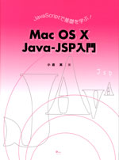
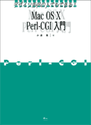
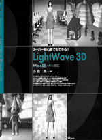

| 「デジタルブックス」は、ピアニストが譜面台に楽譜を乗せて見るように、モニタ横の原稿台に乗せやすくした大判薄型シリーズです。個人練習用だけではなく、パソコン教室や大学・専門学校の教科書としても広く利用されています。 |
| ■
『高速開発で差をつけろ！CakePHPの基礎とECサイト制作入門』 |
|
|
|
著者：小倉 実 発売：星雲社 発行：オモドック 定価：本体3600円＋税 体裁：A4変形判、160頁 内容：最新ｖ1.3のCakePHPの基礎（コントローラ、ビュー、モデル、レイアウト、ページネーション、アソシエーション、Form・Htmlヘルパー、 Auth・Session・ Cookieコンポーネント等）を学び、名簿データベースと画像掲示板を作成します。後半ではオープンソース「オモドックECサイト」のソースを理解しながら、買い物サイトのカスタマイズ方法を学びます。 ［本を購入する］ |
| ■
『JavaScriptで基礎を学ぶ！Mac OS X Java-JSP入門』 |
|
|
 |
著者：小倉 実 発売：星雲社 発行：オモドック 定価：本体3600円＋税 体裁：A4変形判、176頁 内容：まったくのプログラミング初心者が、いきなりオブジェクト指向言語のJavaを練習をするのは大変です。そこでJavaより優しいJavaScriptを通してオブジェクト指向の意味を学んでから、汎用言語であるJavaの基礎練習に入ります。さらにJavaの応用編としてWebプログラミングで必要なJSP、サーブレット、JavaBeansの連携を掲示板作成を通して学んでいきます。Mac OS X v10.3対応。 ［本を購入する］ |
| ■『デザイン志向の人でもできる！Mac
OS X Perl-CGI入門』 |
|
|  | 著者：小倉 実 発売：星雲社 発行：オモドック 定価：本体3200円＋税 体裁：A4変形判、176頁 内容： まったくのプログラミング初心者でもPerlが学べるように、変数や代入などの基礎的なプログラミング用語を細かく丁寧に解説しています。またPerlの基礎練習を終えた後の応用練習では、Webプログラムとして一般的な掲示板作成を通して、WebサーバのApacheなどとの連携部分についても学んでもらっています。Mac OS X v10.2対応 ［本を購入する］ |
| ■『スーパー初心者でもできる！LightWave
3D Mac版+Win対応』 |
|
|  | 著者：小倉 実 発売：星雲社 発行：オモドック 定価：本体3200円＋税 体裁：A4変形判、160頁 内容：＊パソコンをメールにしか使ったことのないスーパー初心者でもできる3DCGの入門書。日本で最もユーザーが多いLightWave 3Dを、デフォルメ・キャラクター制作、ファンタジー3Dイラスト制作、リアル・キャラクター制作、歩行アニメーション制作を通して基礎の基礎からじっくり学ぶスーパーチュートリアル本。6.0、6.5対応。 ［本を購入する］ |